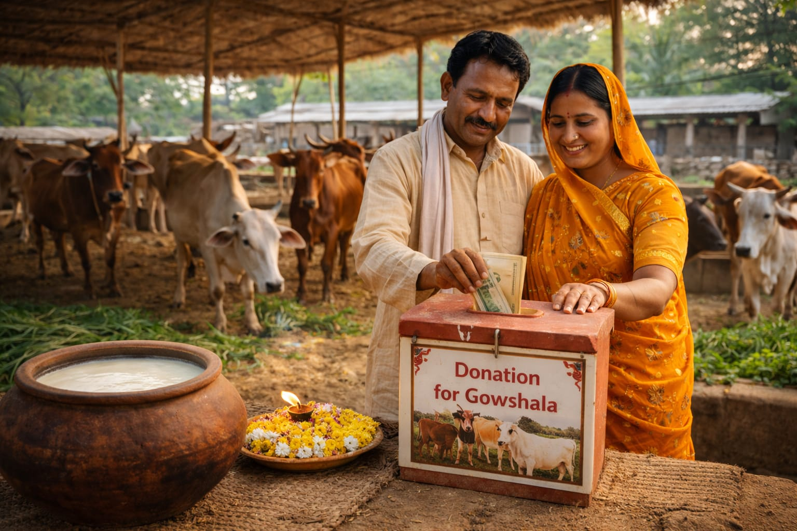

Next day delivery available for select products | Minimum order applies
In Indian tradition, Gow Matha (the cow) is respected as a symbol of care, nourishment, and harmony with nature. For generations, cows have supported rural families by providing milk, natural manure for farming, and resources that help maintain ecological balance. Protecting cows is considered both a cultural value and a responsibility that connects people to sustainable living and agriculture.
The Gowshala follows traditional and natural methods to care for cows and produce dairy products. Milk, ghee, and other resources are obtained in a way that ensures the well-being of the animals. Cow dung is used for organic farming, and natural practices are followed to maintain cleanliness and health within the Gowshala environment.
Supporting the Gowshala helps provide food, shelter, and medical care for the cows. Contributions also help preserve indigenous breeds and promote natural farming practices. Every small contribution supports the mission of protecting animals and encouraging sustainable agriculture for future generations.

Your generous contribution helps us provide food, shelter, and medical care for our cows. It also supports the preservation of indigenous breeds and promotes natural farming practices. Together, we can protect these sacred animals and encourage sustainable agriculture for future generations.